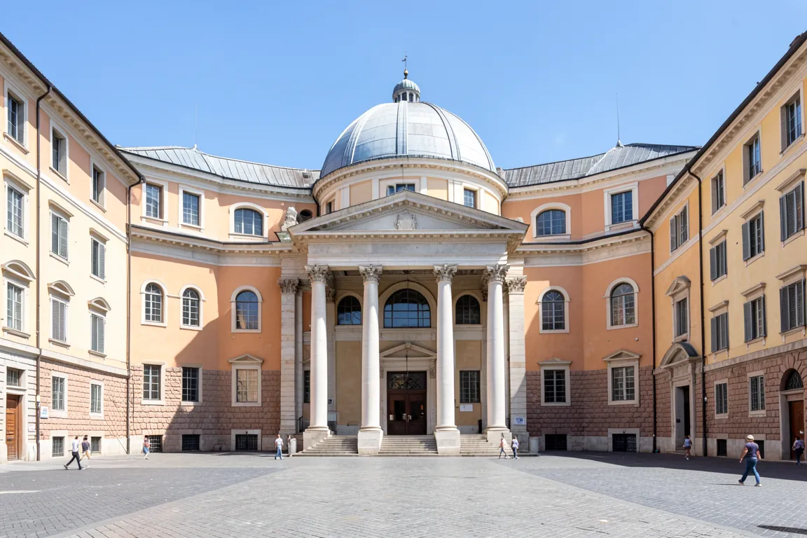

architecture · 15th–16th century · also: Italian Renaissance, Quattrocento architecture, Palladian (late phase)
The Roman orders, the round arch and the dome return, set by number. Brunelleschi, Alberti and Palladio made proportion into a rule: each part is a simple fraction of the whole, and the building is a calm, symmetric order.

Core thesis
Beauty is number: a building is right when each part is a simple ratio of the whole, as in the human body and in music.
Design principles
Set every room and opening in a simple ratio: 1:1, 1:2, 2:3, 3:4 or 4:5, and use the same ratio again in the elevation.
Use the classical orders in their order of weight: Tuscan or Doric at the base, Ionic above, Corinthian at the top.
Compose the front on one central axis, with a bilateral balance and a central entrance or pediment.
Use the semicircular arch and the hemispherical dome; the dome diameter equals the height from the floor to the springing.
Make the column diameter the module, and set the bay at 3 to 5 modules; the storey height at 8 to 10 modules.
Rank the floors: a rusticated base, a tall piano nobile with the largest windows, and a shorter attic.